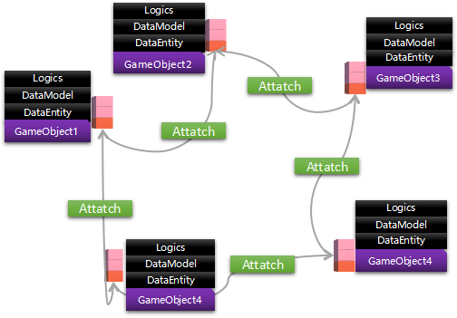

Watch概要
- 介绍
Watch结构作为 BVRP的核心，是基于事件系统并借鉴 MVVM设计而成的一个三层结构体系，由数据实体、数据载体、业务逻辑组成，适用于解耦合三维模型和数据模型，具备良好的对象间通信机制，主要用于GameObject的数据层控制。
- 说明
沿用2.0的三层结构，保持编码格式，形成统一的编程规范
分离数据与业务逻辑，实现更智能的智能指导和批改
以事件驱动，更简易的实现对实现的录像回放
- 相对于2.0优点
Entity实现组合
Logic可根据特性标签实现对消息源的订阅
三层机构对应的关系：n:1:n

Watch基本结构
- Entity
说明： 数据实体，继承自EObject,并实现了ISerializable接口，包含2个属性的初始化事件Id、Enable(实体被订阅时触发)。提供事件的发送方法。提供对自身数据的序列化（仅支持JsonDotNet可序列化的数据类型）
编码要求：
字段的定义必须有属性包装，并按照如下方式编写
public class HelloEntity
{
//带有此标签，表示会发送初始化事件消息
[FireInitEvent]
private int _id = 0;
public int Id
{
get => _id; set
{
int oldValue = _id;
_id = value;
//发送属性变化事件，第一个参数的名字与属性名称保持一致
FireEvent("Id", oldValue, value);
}
}
private string _sex = "男";
public string Sex
{
get => _sex;
set
{
string oldValue = _sex;
_sex = value;
//发送属性变化事件
FireEvent("Sex", oldValue, value);
}
}
} 方法定义及事件触发如下编写
public void FindIndex(string name) {
//dosomething
//发送方法调用事件，第一个参数的名字与方法名保持一致
FireEvent("FindIndex", new object[] { name });
}- DataModelBehaviour
说明： 实体绑定（以GameObject为单位，首先必须关注自身的实体数据，其次也可以关注其他GameObject上的实体数据），事件分发，建立实体和逻辑之间的关联关系，需要挂载到unity的GameObject上。
应用说明： 以下示例性代码主要说明，DataModel（即DataModelBehaviour）对实体数据的操作。
//定义自己的DataModel，继承DataModelBehaviour
public class HelloModel : DataModelBehaviour
{
//重写Awake，自身实体的绑定（第一种），一般在Awake中完成，建议方式
protected override void Awake()
{
Entities.Add(new HelloEntity());
base.Awake();
}
//重写Start，
protected override void Start()
{
base.Start();
//自身实体的绑定（第二种）
this.AttachEntity(new HelloEntity());
}
//绑定其他DataModel上的Entity
public void AttachOtherEntity()
{
//查找对应的DataModel
var otherModel = FindObjectOfType<BindOtherModel>();
this.AttachEntity<BingdingEntity>(otherModel);
}
//实体属性的解绑(包括自身和其他)
public void DettachOtherOrMyEntity()
{
//解绑自身的Entity
this.DetachEntity<HelloEntity>(this);
//解绑已订阅的其他DataModel上的实体对象
var otherModel = FindObjectOfType<BindOtherModel>();
this.DetachEntity<BingdingEntity>(otherModel);
}
}LogicBehaviour ： 处理由DataModelBehaviour转发而来的消息，负责处理具体的业务逻辑，需要挂载到unity的GameObject上
//Interested标签代表感兴趣的实体对象，如果没有此标签，则默认对所有的Entity都感兴趣 //[Interested] //[Interested(typeof(HelloEntity))] //[Interested(Types = new Type[] { typeof(Entity), typeof(Entity) })] public class HelloLogic : LogicBehaviour { //编写具体的业务逻辑 public override void ProcessLogic(IEvent evt) { //属性初始化消息，判断必须在PropertyEvent前 if (evt is PropertyInitEvent) { } else if(evt is PropertyEvent) { } else if(evt is MethodEvent) { } } } }具体图示

Watch结构使用的注意事项
在DataModelBehaviour中，提供了DataModelPool对象池引用，存放了当前场景中所有的DataModelBehaviour引用
在DataModelBehaviour中，提供了GameObjectPool对象池引用，存放了当前场景中所有的GameObject引用
在DataModelBehaviour中，当有物体销毁时，会自动处理有关的绑定事件
在DataModelBehaviour中，提供了对自身已关联实体对象的查找方法